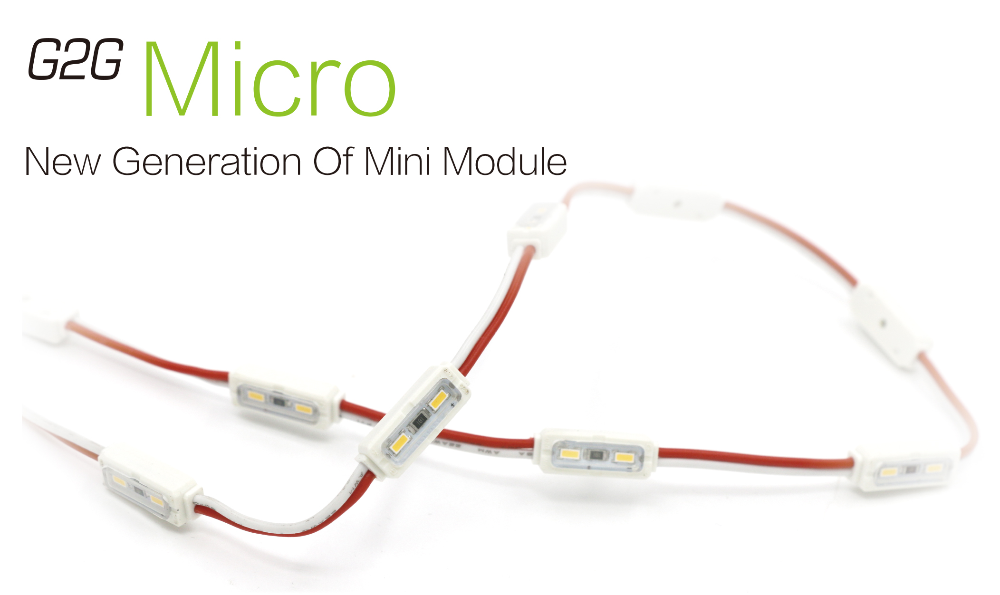
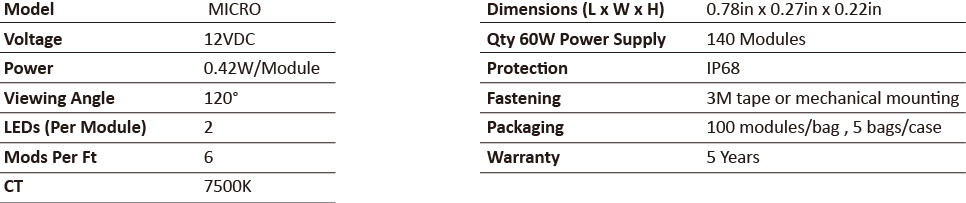

<div class="product-details margit-top110">
	<div class="container">
		<div>
			
		</div>
		<div class="row bottom-line">
			<div class="col-xs-12 col-sm-7 col-md-7">
				<p>
				G2G Micro LED module is the new generation of mini module.With the low lumen decay technology and compact size design,  G2G Micro helps you create brighter and more evenly illuminated signs. Also it is the perfect solution for small channel letter and sign cabinets, etc.	
				</p>
			</div>
			<div class="col-xs-12 col-sm-5 col-md-5">
				<a class="download_layout" href="download_files/G2G_Module_Catalog.pdf" target="_blank">Download The Product Catalog</a>
			</div>
		</div>
		<div class="row product-features">
			<h3 class="specification">LED MODULES FEATURES</h3>
			<p>
				• Low power consumption
				</p>
				<p> • High brightness</p>
				<p>• Long lifespan</p>
				<p> • Low voltage with 12V, be safe to use </p>
				<p> • Easy installation</p>
				<p> • Warranty:5 years
			</p>

		</div>
		
		<h3 class="specification">LED MODULE SPECIFICATIONS</h3>
		<div>
			
		</div>
		<h3 class="specification">LED MODULE DIMENSIONS</h3>
		<div>
			
		</div>
		

	</div>
</div>